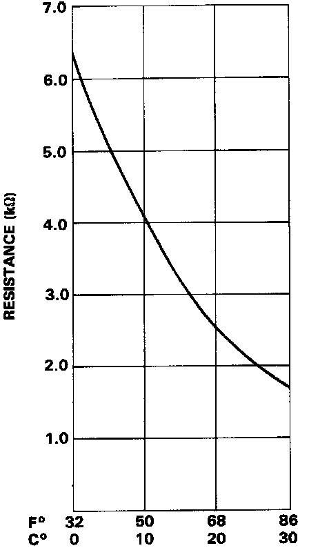
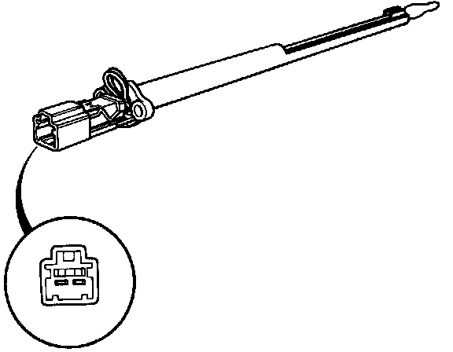

Evaporator Temperature Sensor / Switch: Testing and Inspection
Evaporator Temperature Sensor TestCompare the resistance reading between terminals of the evaporator temperature sensor with the specification shown in the following graph: It should be within specification.

NOTE: Dip the sensor in ice water and measure the resistance, then pour hot water on the sensor and check for change in resistance.

CAUTION: The sensor uses a thermistor which can be damaged if high current is applied to It during testing. Therefore, use a circuit tester that puts out a measuring current of 1 mA or less.